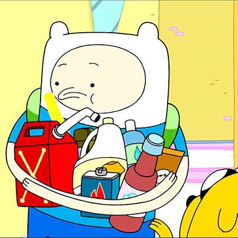

Finn Mertens, More commonly known as Finn the human, is a human boy who lives in the land of Ooo. As a baby Finn was aboandoned by his biological father. He was then adopted by two sentient dogs named Joshua and Margret. The two raised Finn alongside their two children Jake and Jermaine. Around the age of twelve Finn and Jake moved out from their parents house, leaving Jermaine to guard the treasures of their deceased parents. Finn would go on to do countless adventures some simple as helping a little girl find her missing flower basket. Others where he had to defeat an entity who is older than time, whose main was goal is to destroy all life. So needless to say that Finn rightfully earned the title of hero. The rumour of Finn's heroic actions spread throughout the land of Ooo so the citizens can rest easy knowing that no matter how big or small the quest is Finn will always lend a helping hand to save the day.
"Uhh bleach, ammonia, lighter fluid, gasoline... I don't know lady stuff... plutonium..."
"You know what's really scary?... Letting your fears make all your decisions for you"
"Jake don't explode!"
"Well, if being born is the greatist act of creation, then what are you supposed to do after that? isn't everything that comes next sort of a didisapointment... slowly entropying until we deflate into a pile of mush?"